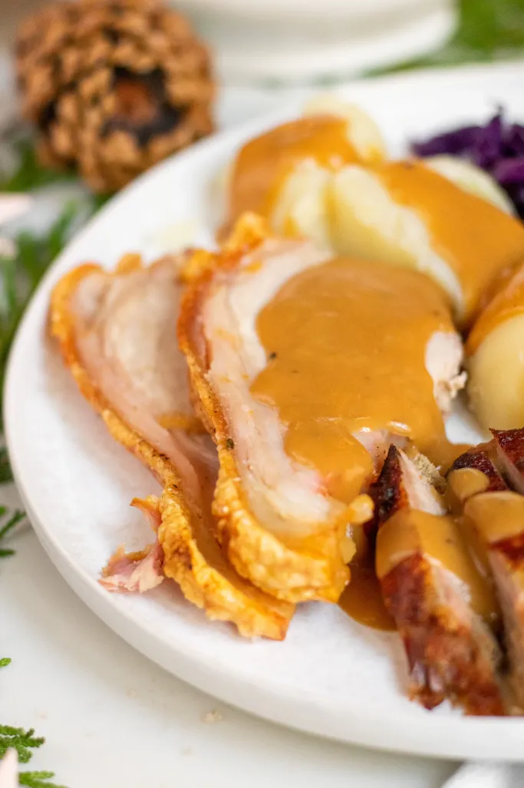

Flæskesteg (Danish Roast Pork)
This recipe makes the most delicious, juicy, and tasty slices of pork - perfect for a traditional Danish
Christmas dinner! And our favorite part - the pork crackling on top - is crispy and crunchy, adding an
amazing savory taste and texture to the dish.
This is the recipe for a traditional Danish roasted pork with a crisp rind. In Denmark this roast is called
a Flæskesteg which translated simply means a pork roast and it is typically served during Christmas.
However, many people also have it for dinner all year around. In many countries, a pork roast
is normally prepared without the rind. In this Danish version the rind is always left on and then it is
cooked into crisp and salty cracklings. In Denmark, you can get this piece of meat in every grocery
stores. Outside Denmark, you properly need to contact you local butcher to get a cut where the rind is
left on the meat.
Ingredients
- 1 kg Boneless pork roast with rind
- coasre salt
- 5 dried bay leaves
Instructions
- Use a sharp knife to cut long deep grooves in the rind of the pork roast. The grooves should be
about 5 mm (1/5 inch) apart. Make sure to make deep grooves in the rind but do not cut into the
actually meat.
- Rub the entire roast thoroughly with coarse salt. Especially, make sure that you get lots of salt in
the grooves.
- Place 3-6 dried bay leaves in the grooves - this can be omitted if you do not have any.
- Place the roast on a rack with a roasting pan underneath. In the roasting pan; add 1/2 liter (2 cups)
of water and some sliced carrots and onions. This water with the vegetables can later be used
to make a nice gravy. Make sure that the roast is lying in a horizontal position. You can use
a ball of aluminium foil under the roast to level it. If you do not do this you risk that the rind gets
an uneven color or get burned.
- Preheat the oven to 225 C (440 F) and cook the roast for 15 minutes.
- Turn down the heat to 200 C (400 F) and continue cooking.
- When the core temperature is 57 C (135 F) turn on the grill function in the oven. This make sure
that the rind gets nice and crisp. Keep an eye on the roast so that you don't burn it.
- The roast is done when the core temperature is 65 C (150 F). It takes about 1.5 hours to reach this
temperature. If the water evaporates during the cooking, you should add some extra.
- When the roast is done; take it out of the oven. Let it rest for about 15 minutes or eat it right
away. Cut the roast in slices at each groove.
- If you want to make a nice gravy; drain the vegetables form the water and pour it in a sauce pan.
Add some heavy cream and some brown gravy coloring. Add salt to taste.